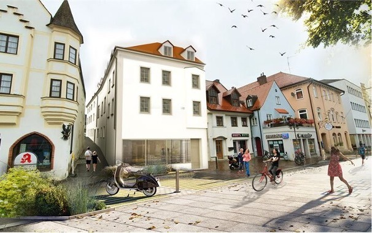
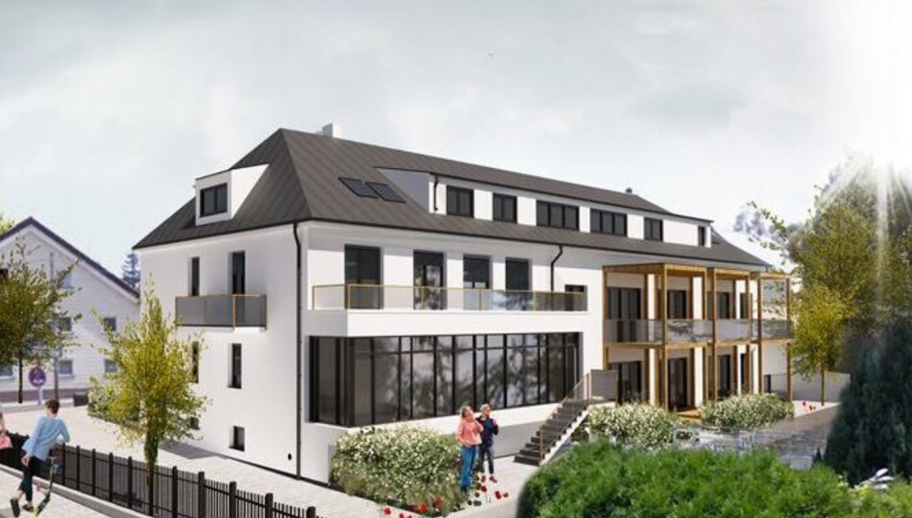
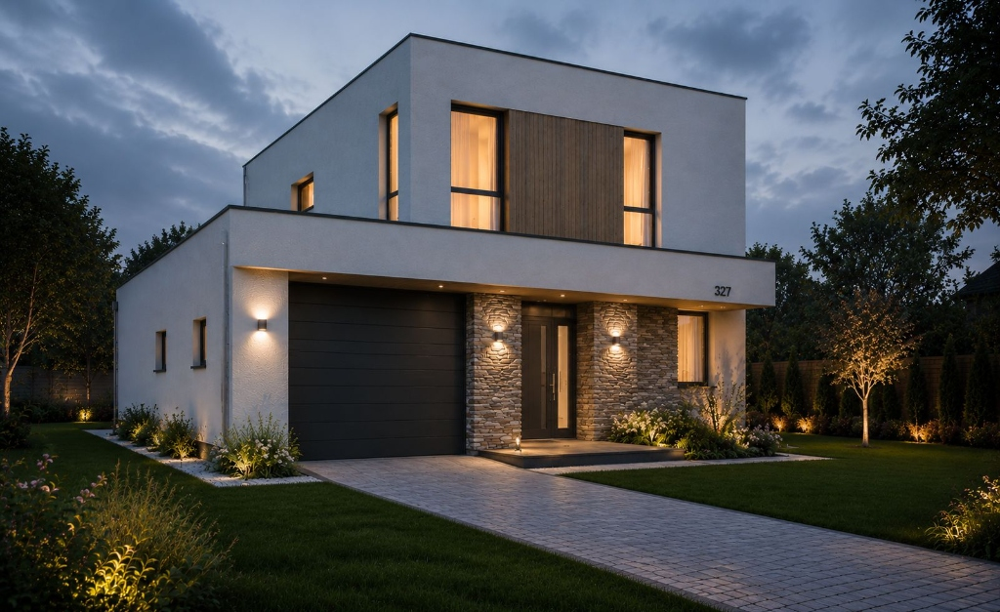
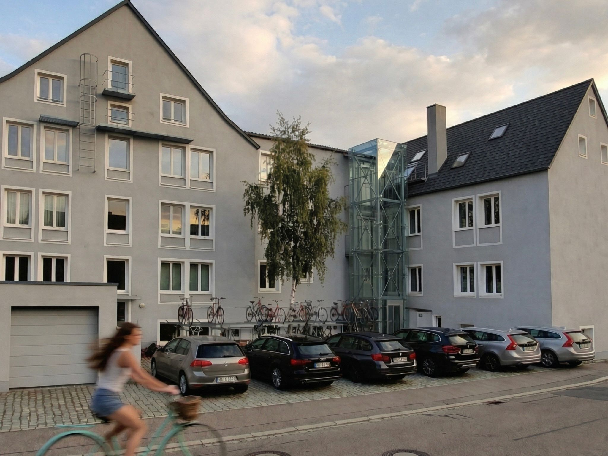
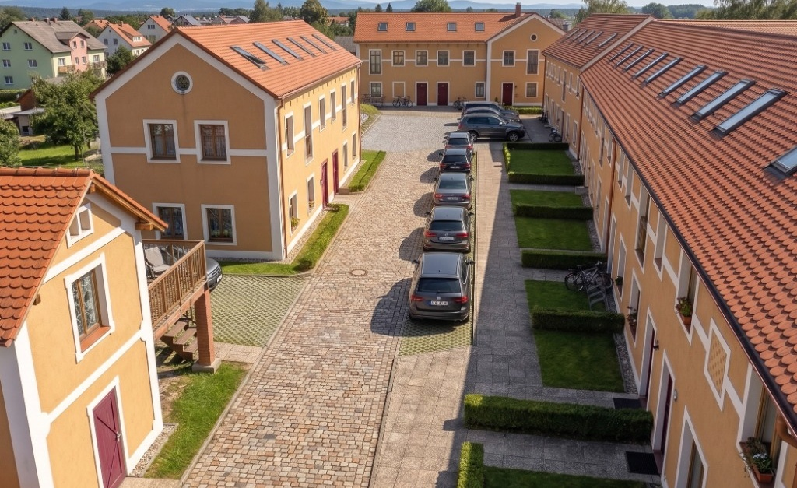
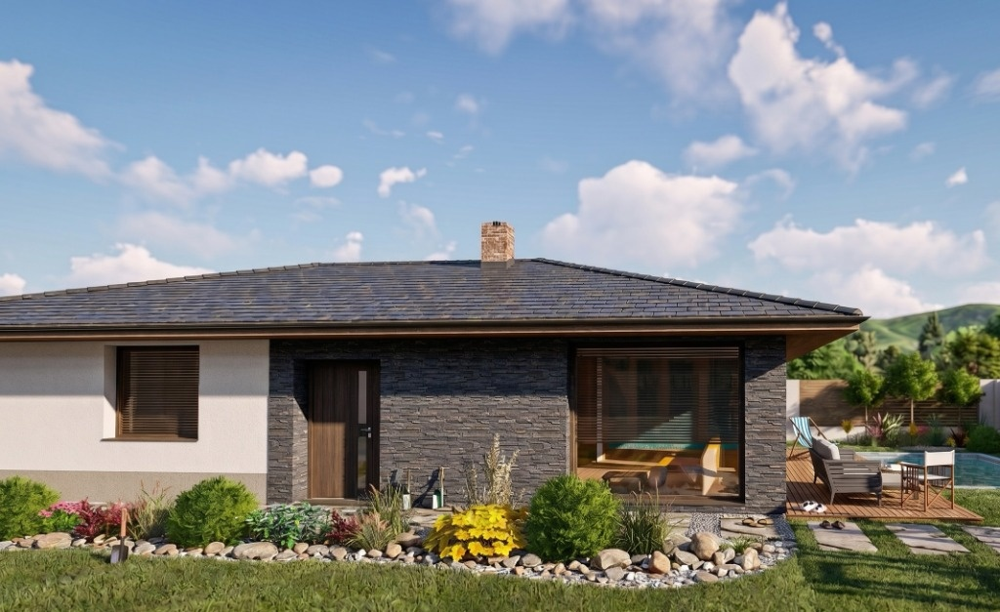
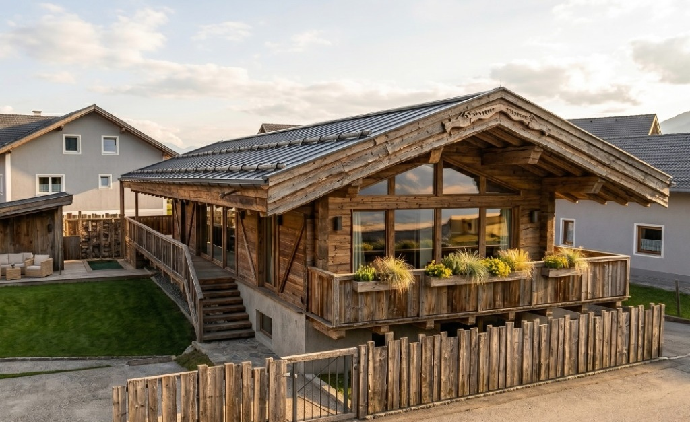
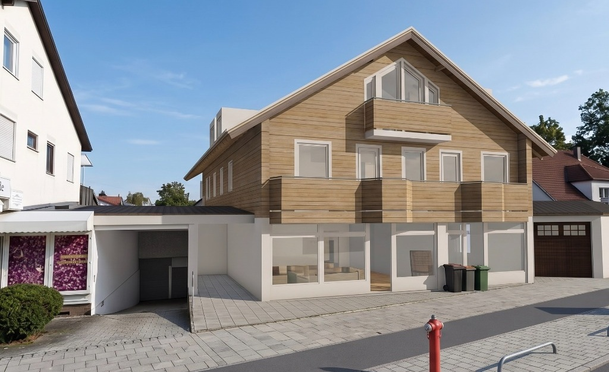
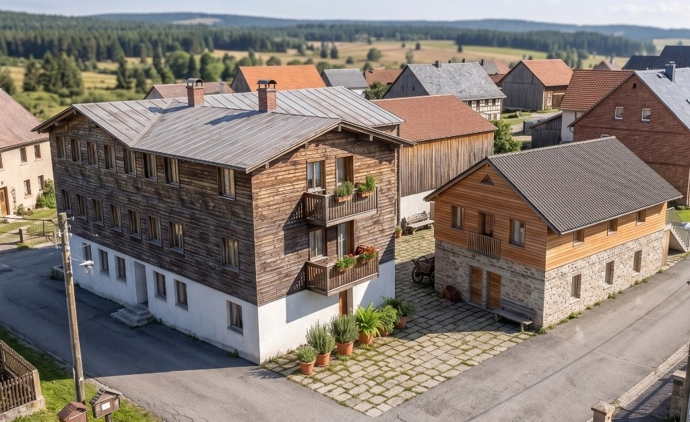

Projekte
Ausgewählte Projekte aus den Bereichen Sanierung und Projektdokumentation.

Freising
Bearbeitung der Projektdokumentation vom Bestand und Abbrucharbeiten bis hin zum neuen Zustand und Konstruktionsdetails, einschließlich der Festlegung von Projektparametern für die Software Nevaris und Bexel.

Eversbuschstrasse
Bearbeitung der Projektdokumentation vom Bestand und Abbrucharbeiten bis hin zum neuen Zustand und Konstruktionsdetails, einschließlich der Dokumentation für Garten und Umgebung.

Einfamilienhaus
Ausarbeitung von Entwurf, architektonischer Studie und Projekt für die Baugenehmigung.

Eichstätt
Bearbeitung der Projektdokumentation vom Bestand und Abbrucharbeiten bis hin zum neuen Zustand und Konstruktionsdetails, einschließlich der Festlegung von Projektparametern für die Software Nevaris und Bexel.

Královice
Erstellung der vollständigen Projektdokumentation für das Hauptgebäude, einschließlich des Bestands, der Abbrucharbeiten, des geplanten Zustands und der Konstruktionsdetails, sowie der Dokumentation für kleinere Neubauten und die Gestaltung des Gartenbereichs.

RD Stropkov
Erstellung eines 3D-Modells eines Einfamilienhauses auf der Grundlage von Zeichnungsunterlagen, Entwurf und Visualisierung des Außenbereichs einschließlich des Gartens.

Prosiek
Bearbeitung der Projektdokumentation und des BIM-Modells der Abbrucharbeiten und des neuen Zustands für die Bauausführung.

Wasserburger Landstraße
Erstellung eines BIM-Modells des bestehenden Gebäudes nach der Sanierung zum Zweck der Baukalkulation.

Schnaitsee
Erstellung eines BIM-Modells des bestehenden Gebäudes nach der Sanierung zum Zweck der Baukalkulation.